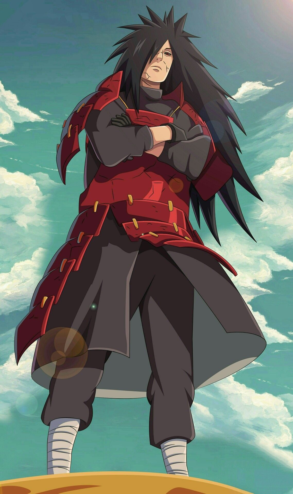

Sobre
Madara Uchiha é um dos membros mais fortes do seu clã que foi revivido durante a 4º Guerra Ninja para realizar o seu objetivo, o Tsukuyomi Infinito.
Traços de Personalidade
- Persuasivo
- Poderoso
- Desumilde
Companheiros
Durante toda a sua vida, Madara reuniu vários companheiros e seguidores da sua ideologia.